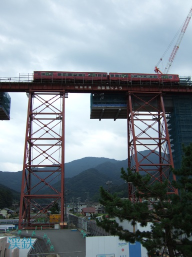
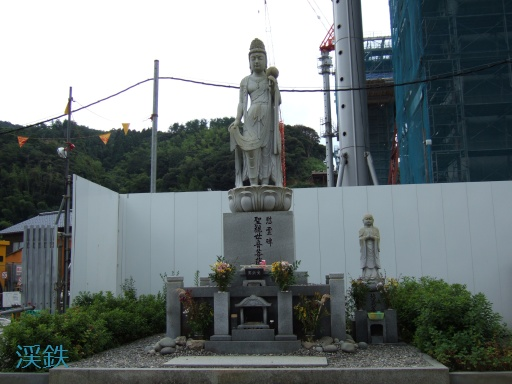
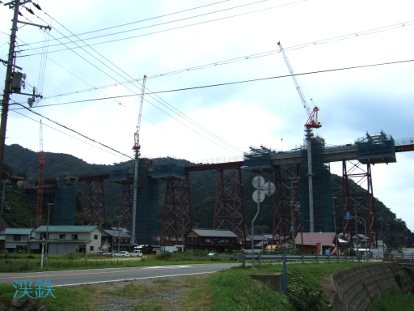
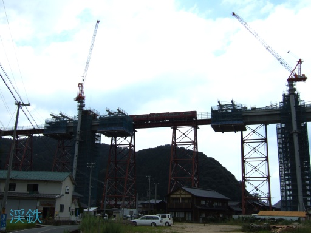
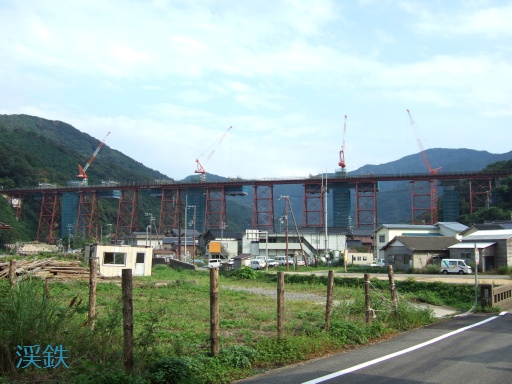
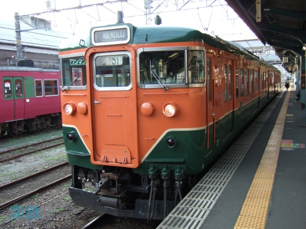
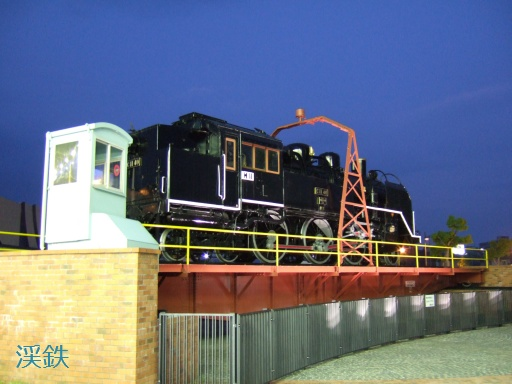

餘部橋梁 (2)
餘部橋梁を通過する普通列車．列車と比較すると，餘部橋梁の高さがわかりますね．
餘部橋梁を通過する特急はまかぜ4号です． 重厚なエンジン音とともに，橋梁を通過する音が響いていました．

1986年（昭和61年）12月28日に発生した，山陰線余部鉄橋列車転落事故の慰霊碑です．
内陸側から，建設中の新橋梁を眺めます． 橋脚を中心にして橋桁を延ばしているのでしょうか． 新橋梁の建設風景も，なかなか興味深いものでした．
内陸側から餘部橋梁を通過する普通列車を撮影しました． 建設中の新橋梁の陰から車体を現します．
最後に，日本海側から撮影した餘部橋梁の全景です． この雄姿が見られなくなったのは実に残念ですが， 「餘部鉄橋」の建設から約1世紀経っていることや， 今後の山陰本線の安全運行を考慮すれば，やむを得ないことです． 新橋梁には，初代橋梁の役目を引き継ぐとともに， 新たな餘部のシンボルとして親しまれるような存在になることを願います．
複路
| 複路 |
|---|
|
餘部 -[山陰本線・普通]-> 豊岡 -[山陰本線・普通]-> 福知山 福知山 -[福知山線・快速]-> 大阪 |
豊岡から福知山までは，113系5300番台が担当でした．
福知山で途中下車し，駅前の福知山駅南口公園に行ってみました． 福知山機関区で使用されていた転車台の上に，蒸気機関車のC11 40号機が鎮座しています． 全国的にも珍しい展示方法なのではないでしょうか．
以上で，今回の全旅程が終了しました．最後までご覧いただき，ありがとうございました．
本稿は3ページ構成となっています．